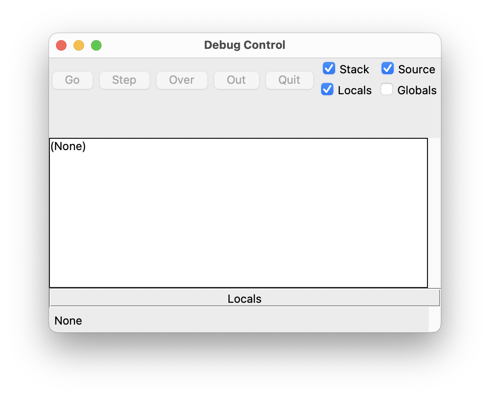
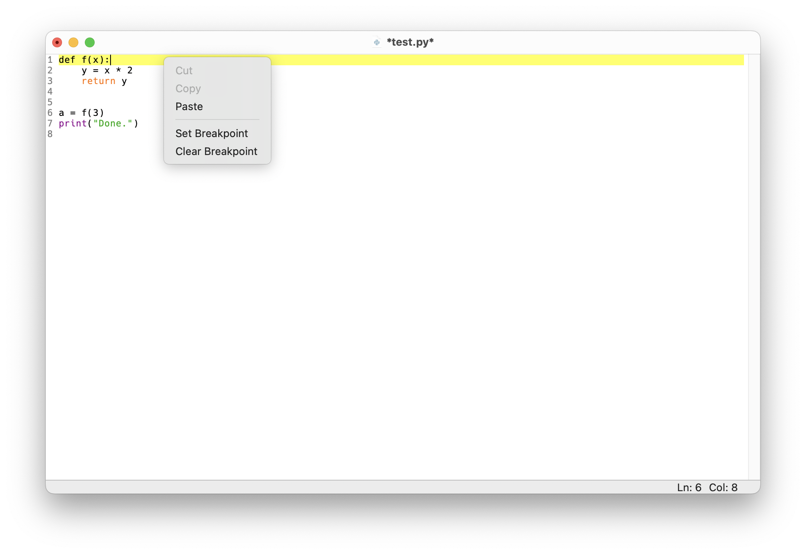

print("Hello")HelloEinführung in Python und PsychoPy
Clemens Brunner
22. Oktober 2026
Funktionen kann man sich wie kleine Programme bzw. Skripte vorstellen. Sie fassen mehrere Anweisungen zu einem Block zusammen. Eine Funktion in Python lässt sich gut mit einer mathematischen Funktion vergleichen, zum Beispiel mit der Quadratfunktion \(f(x) = x^2\). Diese berechnet aus einem gegebenen Wert \(x\) einen neuen Wert \(x^2\). Anschließend kann man die Funktion mit konkreten Werten für \(x\) verwenden, um die entsprechenden Ergebnisse zu erhalten, z.B. \(f(3) = 9\) oder \(f(5) = 25\).
Auch in Python hat eine Funktion eine klar definierte Aufgabe. Funktionen dienen unter anderem dazu, Programmcode zu strukturieren und dadurch die Lesbarkeit zu erhöhen. Außerdem ermöglichen sie es, Code wiederzuverwenden. Das bedeutet, dass man eine einmal definierte Funktion beliebig oft aufrufen (verwenden) kann. Funktionen machen Programme häufig auch kürzer, weil sich wiederkehrende Anweisungen in einer Funktion bündeln lassen. Sollten später einmal Änderungen notwendig sein, muss man den Code nur an einer Stelle (in der Funktion) anpassen. Funktionen lassen sich auch in anderen Programmen wiederverwenden.
Einige Funktionen wie print, type und math.sqrt haben wir bereits in den vorigen Einheiten kennengelernt und verwendet.
Eine Funktion aufrufen bedeutet, dass der in ihr enthaltene Code ausgeführt wird – die Funktion verrichtet also ihre Arbeit.
In Python ruft man eine Funktion mit ihrem Namen gefolgt von einem Paar runder Klammern auf. Innerhalb der Klammern werden die Argumente für die Funktion übergeben (falls notwendig). Mit Argumenten übergibt man der Funktion Werte, welche diese für die Ausführung benötigt. Beispielsweise benötigt die Funktion type ein Argument, denn sonst kann sie ihre Aufgabe nicht erfüllen – nämlich den Typ des übergebenen Arguments zu bestimmen. Gleichermaßen braucht auch die Funktion math.sqrt aus dem math-Modul ein Argument, damit diese die Wurzel der übergebenen Zahl berechnen kann.
Hier sind drei Beispiele für Aufrufe von bereits bekannten Funktionen mit jeweils einem Argument:
Es gibt aber auch Funktionen, die man ohne Argument aufrufen kann (der folgende Funktionsaufruf bewirkt eine Ausgabe einer Leerzeile am Bildschirm):
Wie viele Argumente eine Funktion tatsächlich benötigt, hängt ganz alleine von der jeweiligen Funktion ab (dies ist in ihrer Dokumentation nachzulesen).
Lässt man die Klammern weg, wird die Funktion nicht aufgerufen – es wird dann lediglich der Wert des Namens (also das Funktionsobjekt) angezeigt, wenn man Python im interaktiven Modus verwendet.
Dabei handelt es sich um einen Namen, welcher auf ein Funktionsobjekt verweist:
Das Konzept von Namen in Python haben wir bereits kennengelernt. Es ist unerheblich, auf welches Objekt ein Name verweist, dies kann eine Ganzzahl, eine Funktion, oder jedes beliebige andere Objekt sein. So können wir z.B. auch den Namen f erstellen, welcher auf die Funktion print verweist:
Nun hat die Funktion zwei Namen, nämlich print und f:
Wir sind glücklicherweise nicht auf bereits existierende Funktionen beschränkt, sondern können selbst unsere eigenen Funktionen schreiben. In Python wird eine Funktion wie folgt definiert (die Zeilen in spitzen Klammern sind Pseudo-Code und müssen durch konkrete Befehle ersetzt werden):
Eine Funktionsdefinition beginnt immer mit dem Schlüsselwort def. Danach folgt der (frei wählbare) Funktionsname (aber auch hier muss man sich an die Regeln für gültige Namen halten). Die PEP8-Konvention empfiehlt außerdem, dass Funktionsnamen keine Großbuchstaben enthalten sollten. Falls der Name aus mehreren Wörtern bestehen soll, sollten Unterstrichen zur Trennung verwendet werden, z.B.:
Nach dem Funktionsnamen folgt ein Paar runder Klammern. Innerhalb dieser werden von der Funktion benötigte Parameter aufgelistet (mehrere Parameter werden durch Kommas voneinander getrennt). Parameter sind Platzhalter, welche beim Ausführen der Funktion mit spezifischen Werten ersetzt werden. Diese spezifischen Werte (auch Argumente genannt) werden bei jedem Aufruf übergeben. Es gibt aber auch Funktionen, die keine Parameter haben – die beiden runden Klammern müssen aber trotzdem immer vorhanden sein:
Falls eine Funktion zwei Parameter haben soll, würde man dies wie folgt anschreiben:
Unabhängig von der Anzahl der Parameter schließt ein Doppelpunkt den sogenannten Funktionskopf ab:
Nun folgt der Code, welcher von der Funktion ausgeführt wird, wenn diese aufgerufen wird – dieser Code muss um eine Ebene eingerückt werden (also vier Leerzeichen). Man spricht hier vom sogenannten Funktionskörper. Im Funktionskörper kann man insbesondere alle Parameter wie normale Namen verwenden – diese sind nur innerhalb der Funktion vorhanden und erhalten dann die konkreten Werte der Argumente, welche beim Funktionsaufruf übergeben wurden.
Eine Funktion kann Parameter haben, welche bei der Definition aufgelistet werden müssen. Wenn man die Funktion aufruft, muss man für alle Parameter konkrete Werte übergeben – diese konkreten Werte nennt man Argumente.
Das folgende Beispiel definiert eine Funktion namens test_function, welche aus zwei Zeilen Code im Funktionskörper besteht:
Man beachte, dass die Funktion hier lediglich definiert wurde, d.h. sie wurde noch nicht ausgeführt. Sie ist aber dem Python-Interpreter ab jetzt bekannt (d.h. es existiert ein Name test_function, welcher auf ein Funktionsobjekt verweist):
Aufgerufen kann unsere Funktion nun wie folgt werden (die runden Klammern sind essentiell):
Wir können eine bereits definierte Funktion beliebig oft aufrufen.
Im Fall einer Funktion mit Parametern würden die Definition und der Aufruf z.B. so aussehen:
Übergibt man beim Aufruf dieser Funktion nicht genau die erwartete Anzahl an Argumenten, bekommt man einen Fehler:
--------------------------------------------------------------------------- TypeError Traceback (most recent call last) Cell In[17], line 1 ----> 1 test_function_2() # zwei Argumente erwartet, aber keine übergeben! TypeError: test_function_2() missing 2 required positional arguments: 'n' and 'v'
Alle in der Funktionsdefinition definierten Parameter müssen beim Aufrufen der Funktion mit konkreten Argumenten befüllt werden!
Es ist üblich, gleich in der ersten Zeile des Funktionskörpers eine kurze Beschreibung der Funktion in einem sogenannten Docstring anzugeben (dieser kann sich auch über mehr als eine Zeile erstrecken). Ein Docstring wird von jeweils drei Anführungszeichen """ umschlossen. Das Vorhandensein eines Docstrings ändert nichts an der Funktionsweise, dient aber der Dokumentation und gehört zum guten Coding-Stil dazu, wie folgendes Beispiel demonstriert:
Ein solcher Docstring ist übrigens kein Kommentar! Verwenden Sie für Kommentare also weiterhin das #-Zeichen!
Funktionen können Werte (Ergebnisse) zurückgeben. In beiden soeben definierten Funktionen test_function und test_function_2 wird allerdings kein Wert explizit zurückgegeben (d.h. die Funktionen führen nur Code aus und geben implizit None zurück, der spezielle Wert für “nichts” in Python). Diese beiden Funktionsaufrufe können also nicht auf einen Wert reduziert werden – sie sind also keine Ausdrücke.
Wenn eine Funktion explizit einen Wert (ein Ergebnis) zurückgeben soll, verwendet man dazu das Schlüsselwort return, gefolgt vom gewünschten Rückgabewert:
Beim Aufrufen der Funktion wird ihr Code im Funktionskörper ausgeführt, bis die Zeile mit return erreicht wird. Diese bewirkt, dass die Funktion sofort verlassen und der angegebene Wert number + 1 zurückgegeben wird (hier wird für number natürlich der als Argument übergebene konkrete Wert verwendet). Sollten also nach dem return-Befehl noch weitere Zeilen Code im Funktionskörper folgen, werden diese nicht mehr ausgeführt.
Ein Funktionsaufruf wird also immer auf seinen Rückgabewert reduziert. Ein Aufruf einer Funktion, die einen Wert zurückgibt, ist also ein Ausdruck. Nun könnte man diesem auch einen Namen geben:
Man kann den Wert einer Funktion (also den Rückgabewert) auch explizit mit Hilfe der print-Funktion am Bildschirm ausgeben:
Man kann überall dort, wo man einen Wert angeben kann, auch einen Ausdruck (eine beliebige Kombination aus Werten und Operatoren) einsetzen – eben auch einen Funktionsaufruf, der einen Wert zurückgibt. Dies wird als Komposition bezeichnet. Die Werte werden der Reihe nach (von innen nach außen) verarbeitet und eingesetzt, bis zum Schluss ein einziger Wert übrig bleibt:
Mit Hilfe des sogenannten Debuggers können wir ein Script in “Zeitlupe” ausführen. Im Debug-Modus wartet der Python-Interpreter nach jedem Befehl, bis der nächste manuell gestartet wird. Dadurch können wir den Programmfluss beobachten und den Zustand des Programms bei jedem Schritt inspizieren. Dabei geht man wie folgt vor:
In der IDLE-Shell wählt man Debug – Debugger. Dadurch wird ein neues Werkzeugfenster geöffnet und der Debugger aktiviert. Stellen Sie sicher, dass das Kontrollkästchen “Source” aktiviert ist, um die aktuelle Codezeile zu sehen.

Setzen Sie dann einen Haltepunkt im Python-Skript, indem Sie mit der rechten Maustaste auf die Zeile klicken, an der Sie die Ausführung stoppen möchten und wählen Sie “Set Breakpoint”. Für dieses Beispiel setzen wir einen Haltepunkt gleich in der ersten Zeile (diese wird dann gelb).

Führen Sie jetzt das Skript mit Run – Run Module aus (oder drücken Sie F5). Das Skript wird dann am ersten Haltepunkt gestoppt (und diese Zeile wird noch nicht ausgeführt).
Um die Ausführung fortzusetzen, wählen Sie “Step”, um die aktuelle Zeile auszuführen und in der nächsten Zeile anzuhalten. Wenn die aktuelle Zeile einen Funktionsaufruf enthält und Sie nicht in die Funktion springen möchten (zum Beispiel, weil Sie nicht daran interessiert sind, den Code einer eingebauten Funktion zu sehen), klicken Sie stattdessen auf “Over”.
Wenn sich die aktuelle Zeile bereits in einer Funktion befindet und Sie diese Funktion sofort verlassen möchten, klicken Sie auf “Out”.
Zum Ausprobieren kann man das folgende kurze Script debuggen:
In welcher Reihenfolge werden die Code-Zeilen ausgeführt?
Alternativ kann die Website PythonTutor den Programmfluss ebenfalls Schritt für Schritt darstellen. Dazu kopiert man einfach den gesamten Code in das Eingabefeld und klickt auf “Visualize Execution”. So kann man durch wiederholtes Klicken auf “Next” nachvollziehen, wie Python den Code ausführt.
Suchen Sie sich aus der Liste der eingebauten Funktionen (siehe Einheit 2) drei beliebige Funktionen aus.
Schreiben Sie eine Funktion mult, welche zwei Zahlen multipliziert und deren Produkt zurückgibt. Die beiden Zahlen sollen als Argumente übergeben werden können. Rufen Sie Ihre Funktion mit ein paar Wertepaaren auf und stellen Sie sicher, dass Ihre Funktion wie gewünscht funktioniert. Die Funktion soll das Ergebnis als Wert zurückgeben, d.h. verwenden Sie innerhalb der Funktion nicht print, sondern return!
Schreiben Sie eine Funktion to_fahrenheit, welche einen Parameter celsius hat und diese Celsius-Temperatur in Fahrenheit umwandelt und zurückgibt. Zum Testen rufen Sie Ihre Funktion mit den Celsius-Temperaturen 0, 20, 38 und 100 auf.
Schreiben Sie außerdem eine Funktion to_celsius (mit entsprechendem Parameter fahrenheit) und wandeln Sie die vier Fahrenheit-Temperaturen, die Sie vorher beim Aufruf der Funktion to_fahrenheit erhalten haben, wieder in Celsius-Temperaturen um!
Nennen Sie Gründe, warum man Funktionen verwendet. Erklären Sie auch kurz den Unterschied zwischen Funktionsdefinition und Funktionsaufruf! Was ist der Unterschied zwischen Parametern und Argumenten?
Schreiben Sie eine Funktion is_odd, welche einen Parameter hat und überprüft, ob das übergebene Argument gerade oder ungerade ist (das können Sie z.B. durch den Rest der Division durch 2 überprüfen). Falls das Argument ungerade ist, soll die Funktion True mittels return zurückgeben, sonst False.
Die Lösungen zu diesen Übungen finden Sie hier.